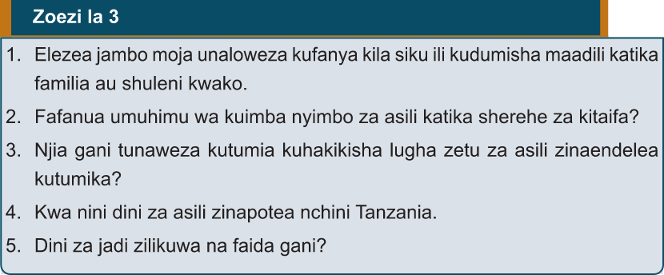

Kazi ya kufanya namba 4
Jadili katika makundi mchango wa nyimbo na ngoma za asili katika kuimarisha na kuenzi maadili kwa Taifa kisha wasilisha darasani
Zoezi la 3

1. Elezea jambo moja unaloweza kufanya kila siku ili kudumisha maadili katika familia au shuleni kwako.
2. Fafanua umuhimu wa kuimba nyimbo za asili katika sherehe za kitaifa?
3. Njia gani tunaweza kutumia kuhakikisha lugha zetu za asili zinaendelea kutumika?
4. Kwa nini dini za asili zinapotea nchini Tanzania.
5. Dini za jadi zilikuwa na faida gani?